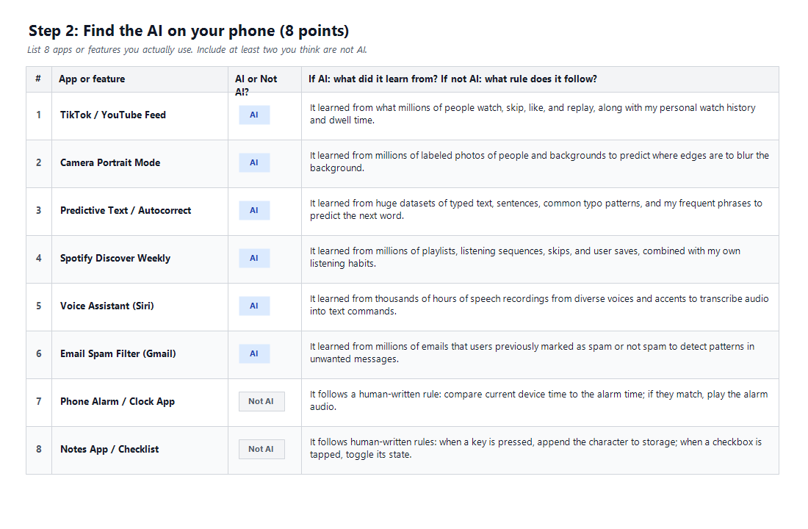

Decide AI or Not AI for each. Write one sentence saying why, using the test.
| Thing | AI or Not AI? | Why |
|---|---|---|
| A calculator app | Not AI | A human programmer wrote exact mathematical rules and instructions for every operation, so it follows written rules rather than learning from examples. |
| Face unlock on a phone | AI | It learned to identify facial features and recognize my face by training on thousands of face photo examples, rather than following rigid handwritten rules. |
| A timer that beeps after 5 minutes | Not AI | A person wrote the rule telling the computer to count down the seconds and sound a chime when the counter reaches zero, so it follows human-written instructions. |
List 8 apps or features you actually use. Include at least two you think are not AI.
| # | App or feature | AI or Not AI? | If AI: what did it learn from? If not AI: what rule does it follow? |
|---|---|---|---|
| 1 | TikTok / YouTube Recommendations | AI | It learned from what millions of people watch, skip, like, and replay, along with my personal watch history and dwell time. |
| 2 | Smartphone Camera Portrait Mode | AI | It learned from millions of labeled photos of people and backgrounds to predict where subject edges and depth boundaries are to blur the background. |
| 3 | Keyboard Predictive Text / Autocorrect | AI | It learned from huge datasets of typed text, sentences, common typo patterns, and my frequent phrases to predict the next word. |
| 4 | Spotify Discover Weekly / Smart Shuffle | AI | It learned from millions of playlists, listening sequences, skips, and user saves, combined with my own listening habits. |
| 5 | Voice Assistant (Siri / Google Assistant) | AI | It learned from thousands of hours of speech recordings from diverse voices and accents to transcribe audio into text commands. |
| 6 | Email Spam Filter (Gmail) | AI | It learned from millions of emails that users previously marked as spam or not spam to detect patterns in unwanted messages. |
| 7 | Phone Alarm / Clock App | Not AI | It follows a human-written rule: compare current device time to the alarm time; if they match, play the alarm audio. |
| 8 | Built-in Notes App / Checklist | Not AI | It follows human-written rules: when a key is pressed, append the character to storage; when a checkbox is tapped, toggle its checkmark state. |
Pick one app from your list that is AI. Answer in full sentences.
Chosen App: TikTok / YouTube Recommendations Feed
Finish this sentence in your own words, without looking back at the slides:
The difference between a regular program and AI is that a regular program executes explicit step-by-step rules written by a human programmer, whereas an AI program discovers its own patterns and decision-making rules by learning from examples.
A video game enemy chases you when you get close and runs away when its health is low. Is it AI? Use the test, and explain why people still call it "game AI."
Applying the test ("Did a person write the rules, or did the computer learn them from examples?"), this video game enemy is not true AI. A programmer wrote exact conditional rules into the game's code (such asif player_distance < 10: chase()andif health < 20%: flee()). The enemy never learned these behaviors from playing matches or studying combat examples.
People still call it "game AI" because within game development, the term has historically referred to any scripted system, state machine, or decision tree that makes non-player characters (NPCs) behave in a way that feels intelligent and responsive to the player, even though it is entirely rule-based.
Photo or screenshot 1: your finished Step 2 table of eight apps. Press Windows + Shift + S to take a screenshot or see the generated image below.

Save this assignment in your repository in a folder named week01, commit with git commit -m "Week 1 Assignment 1: AI Around Me", push to GitHub, and ensure your repo is shared with mjsekol.
My commit link: https://github.com/BaconFace288/AIAroundMe/commit/d4a92aa121ec26f5064e14ccf3fb658b103eb646